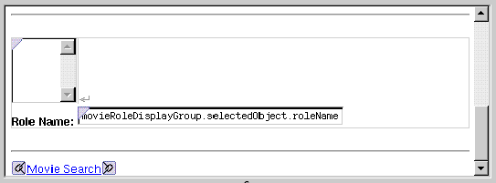

Table of Contents
Previous Section
Adding a Form
Now lay out the user interface used to view and edit the selected MovieRole. When you're done, it should look like the following:

Add another horizontal rule after the repetition.
Use the button (in the "Dynamic form elements" toolbar) to add a browser element between the two horizontal rules.
A form element is automatically created around the browser.
Beneath the browser, type the bolded text Role Name:.
Add a text field.
Bind the text field to
movieRoleDisplayGroup.selectedObject.roleName
.
Table of Contents
Next Section
 Table of Contents
Table of Contents  Next Section
Table of Contents
Next Section
Table of Contents  Previous Section
Table of Contents Next Section
Previous Section
Table of Contents Next Section